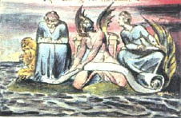

Ekim zamanı öğren, hasat vakti öğret, kışın keyfine bak.
Arabanı ve sabanını ölülerin kemikleri üzerinde sür.
Aşırılığın yolu bilgeliğin sarayına varır.
Sağgörü, Yeteneksizliğin kur yaptığı zengin ve çirkin bir kız kurusudur.
Arzulayan ama eylemeyen, hastalık üretir.
Biçilmiş solucan sabanı affeder.
Suyu seveni ırmağa daldır.
Budala ile bilgenin gördüğü ağaç aynı değildir.
Yüzü ışık saçmayan asla bir yıldız olamaz.
Sonsuzluk, zamanın nimetlerine âşıktır.
Meşgûl arının kedere vakti yoktur.
Budalalığın zamanı saatle ölçülür, bilgeliğinkini hiçbir saat ölçemez.
Tüm sağlıklı besinler ağsız ya da kapansız yakalanır.
Kıtlık zamanında sayıyı, ağırlığı ve ölçüyü kaydet.
Hiçbir kuş sadece kendi kanatlarıyla çok yükseğe uçamaz.
Ölü bir gövde yaraların öcünü alamaz.
En yüce edim, kendinizden önce başkasını düşünmektir.
Budala kişi budalalığında diretseydi, bilge olurdu.
Budalalık hilekârlığın maskesidir.
Gururun pelerini Utançtır.
Hapishaneler Yasanın taşlarıyla inşa edilir,
Kerhaneler Dinin tuğlalarıyla.
Tavuskuşunun kibri Tanrının görkemidir.
Keçinin şehveti Tanrının cömertliğidir.
Aslanın gazabı Tanrının bilgeliğidir.
Kadının çıplaklığı Tanrının yapıtıdır.
Kederin aşırısı güler. Neşenin fazlası gözyaşı döker.
Aslanların kükremesi, kurtların uluması, fırtınalı denizin öfkeden kabarması ve yok edici kılıç, insan gözünün göremeyeceği sonsuzun parçalarıdır.
Tilki kapanı suçlar, kendini değil.
Zevk döller. Keder doğurtur.
Erkek aslan postu, kadın koyun kürkü giysin.
Kuşa bir yuva, örümceğe bir ağ, insana dostluk.
Sırıtkan bencil budala ile somurtkan huysuz budala, her ikisi de bilge sanılacaklar, ki belki ve böylece bir güç olacaklar.
Şimdi kanıtlanan eskiden sadece hayal edilirdi.
Sıçan, fare, tilki ve tavşan, kökleri gözler; aslan, kaplan, at ve fil meyveleri gözler.
Sarnıç tutar, pınar taşırır.
Bir düşünce ummanı doldurur.
Düşünceni söylemeye daima hazır ol, alçak kişi senden sakınacaktır.
İnanılası her şey, hakikatin imgesidir.
Kartal asla, kargayı öğrenmeye boyun eğdiği zamanki kadar vakit kaybetmemiştir.
Tilki kendi geçimini sağlar, Tanrı ise aslanınkini.
Sabahları düşün. Öğlen vakti eyle. Akşam ye. Gece uyu.
Kendisini aldatmana göz yuman, seni tanıyordur.
Pulluğun sözcükleri izlemesi gibi, Tanrı da duacıları ödüllendirir.
Öfkenin kaplanları, eğitimin atlarından daha bilgedir.
Durgun sudan zehir bekle.
Yeterli olanın fazlasını bilmedikçe, neyin yeteceğini asla bilemezsin.
Aptalın sitemini dinle! Bu krallara yaraşır.
Ateşin gözleri, havanın burun delikleri, suyun ağzı, toprağın sakalı.
Cesareti az olan, şeytanlıkta ustadır.
Ne elma ağacı kayın ağacına nasıl büyüyeceğini sorar, ne de aslan merak eder, at nasıl avlanır.
Müteşekkir alıcı bereketli hasat kaldırır.
Başkaları budala olmasaydı, biz budala olurduk.
Tatlı hazzın ruhu asla kirletilemez.
Bir Kartal gördüğünde, Dehanın bir parçasını görürsün. Kaldır kafanı!
Yumurtlamak için tırtılın en uygun yaprakları özenle seçmesi gibi, rahip de en tatlı zevklerde lanet eder.
Küçük bir çiçek yaratmak çağlara malolur.
Bağlayanları lânetle. Gevşetenleri kutsa.
En iyi şarap en eskisidir, en iyi su en tazesidir.
Dualar toprağı sürmez! Şükürler ekin biçmez!
Hazlar gülmez! Kederler gözyaşı dökmez!
Baş Soyluluk, kalp Merhamet duygusu uyandırır, cinsel organlar Güzellik, eller ve ayaklar Orantı.
Kuş için hava, balık için deniz neyse, aşağılık kişi için de hor görme odur.
Karga her şeyin siyah olmasını diledi, baykuş ise beyaz.
Coşkunluk güzelliktir.
Öğüt vereni tilki olsaydı, aslan kurnaz olurdu.
Gelişme düz yollar yaratır, oysa Gelişmenin uğramadığı dolambaçlı yollar, Dehanın yollarıdır.
Doyurulmamış arzuları emzireceğine, bebeği daha beşikteyken öldür.
İnsanın olmadığı yerde doğa çoraktır.
Hakikat asla anlaşılsın diye anlatılamaz, ve inanılamaz hakikate.
Yeterli! ya da Çok fazla.
